1. 创建备课本
进入工作空间→在线备课(课程资源库)→我的电子备课本，如果还没有任何备课本，点击“创建您的第一个备课本”；否则点击“新建备课本”。
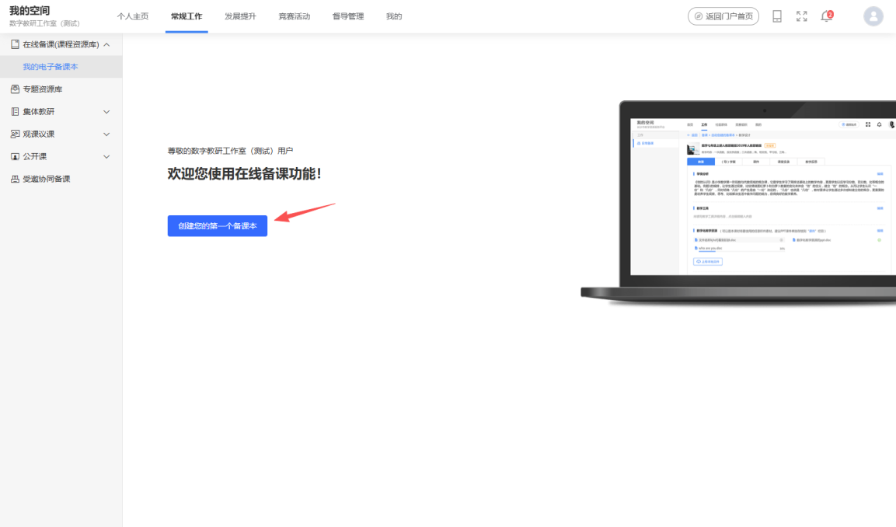
第一步，填写备课本的任教信息和备课本名称。
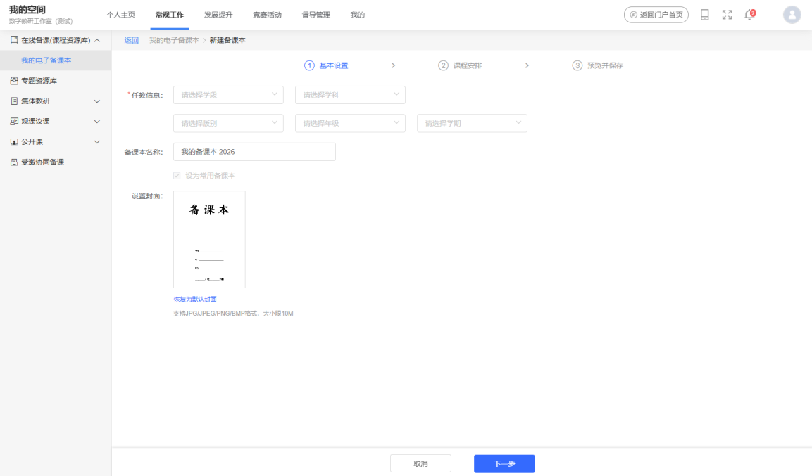
第二步，设置课程安排。选择学期开始日期、本学期的教学周数量，以及每周的课时，点击“确定”将生成备课本的课程安排表。在课程安排表中，可以添加或删除教学周，添加或删除每周课时，拖动教学周顺序等。
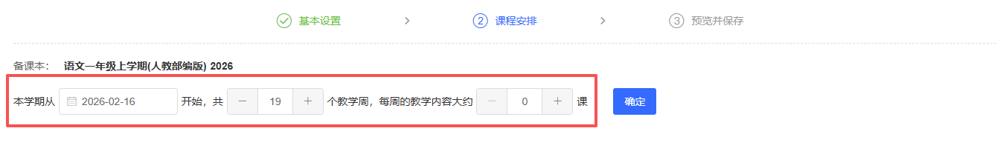
建议为每个教学周填写教学内容，如果备课本有关联教材，点击“”可以快速选择周教学内容。
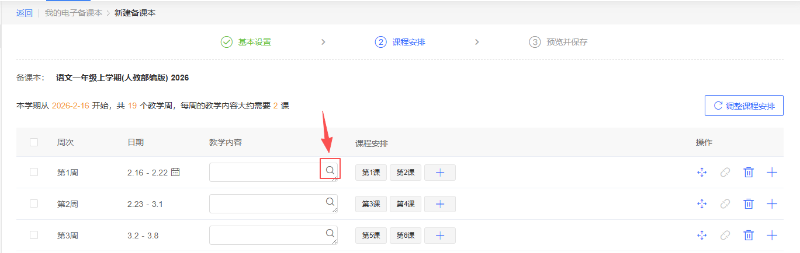
点击“调整课程安排”将重置课程安排表，请谨慎操作。
如果只是开学日期选择错了，请点击第一周日期后的日历图标“ ”重新设置开学日期，课程安排表将根据新开学日期自动调整。
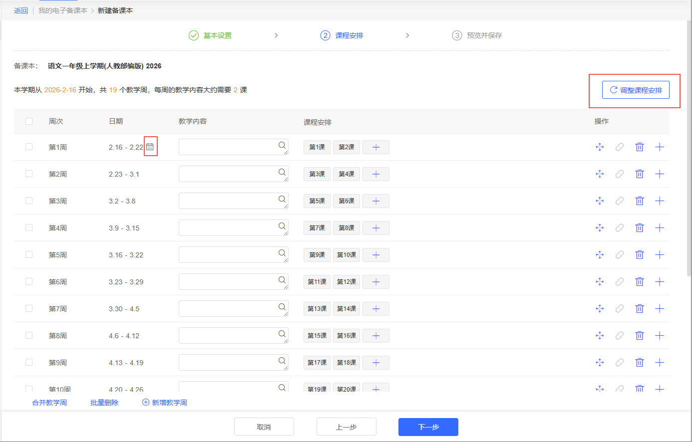
第三步，预览备课本的完整效果，再点击“保存备课本”，完成创建备课本的操作。
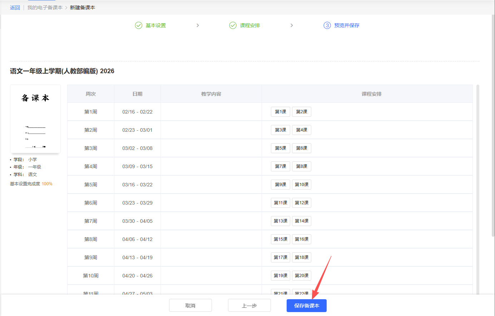
2. 打开我的备课本
进入工作空间→在线备课(课程资源库)→我的电子备课本，显示默认备课本。
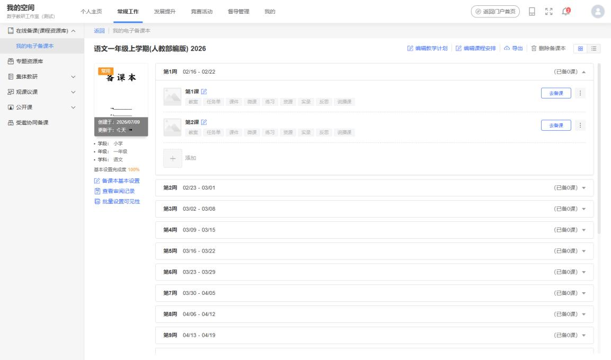
如果还有其他备课本，需要点击“所有备课本”查看，点击备课本封面即可打开选中的备课本。
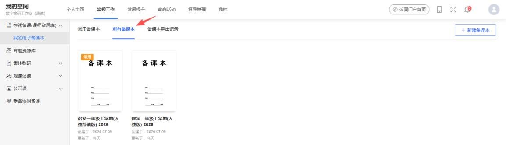
3. 设置常用备课本
进入工作空间→在线备课(课程资源库)→我的电子备课本。点击“所有备课本”页签，打开所有备课本列表。已经是常用的备课本左上角有“常用”标识。鼠标移到需要新设置的备课本上，点击浮出的“设为常用备课本”。常用备课本只有1个，设置新的常用备课本，会将原有的常用备课本取消。
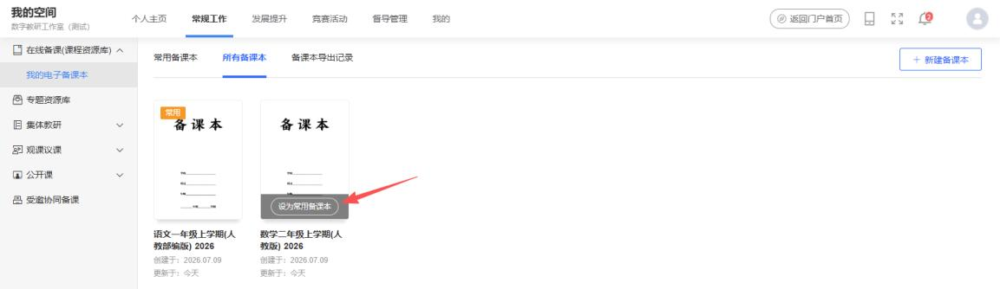
4. 修改备课本
修改基本设置：在备课本基本设置中可以修改备课本的学段、学科、教材等信息，以及备课名称、封面等。进入工作空间→在线备课（课程资源库）→我的电子备课本。点击“备课本基本设置”，打开修改页面修改并保存。
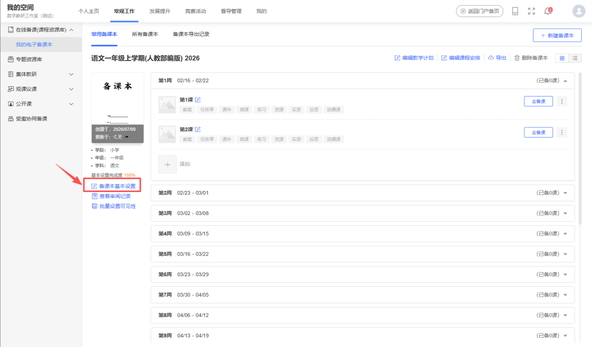
修改课程安排：在课程安排中修改教学周起始日期，添加、删除、合并教学周，修改周教学内容等。进入工作空间→在线备课（课程资源库）→我的电子备课本。点击“编辑课程安排”，打开修改页面修改并保存。
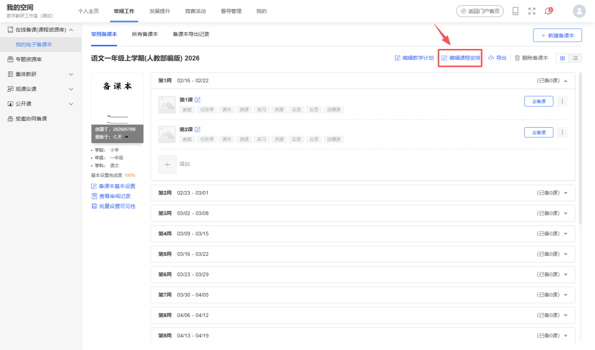
5. 编辑教学计划
编辑当前备课本的班级学情分析、教材分析、教学目标、教学措施，备课本导出打印时会打印这部份内容。进入工作空间→在线备课（课程资源库）→我的电子备课本。点击“编辑课程安排”，打开修改页面编辑并保存。
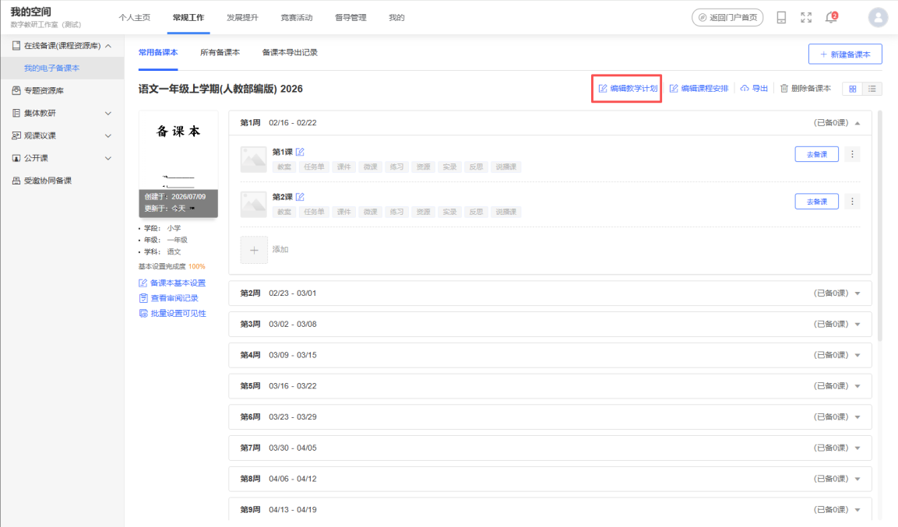
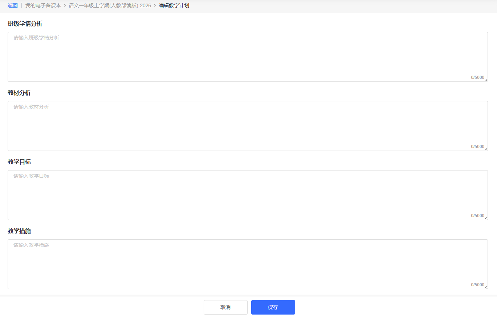
6. 删除备课本
进入工作空间→在线备课（课程资源库）→我的电子备课本。点击“删除备课本”即可。
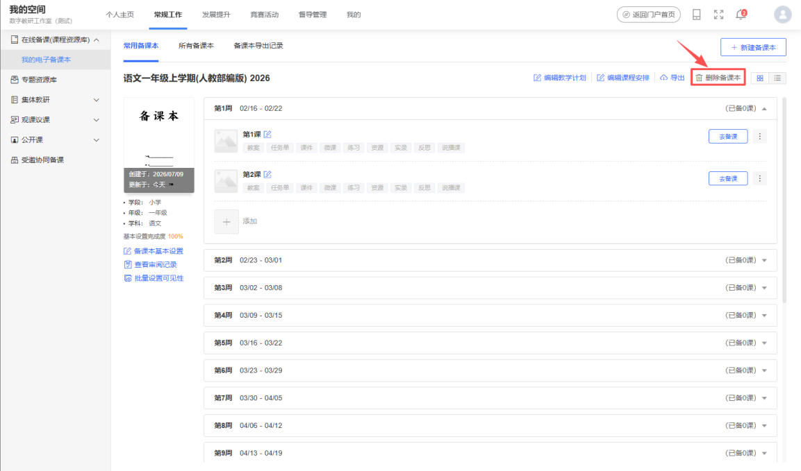
注意：删除备课本会导致已有的数据丢失，请谨慎操作。
7. 导出与下载备课本
备课本可以导出来word 文件并下载到电脑，以便打印装订成纸质备课本。进入工作空间→在线备课（课程资源库）→我的电子备课本。点击“导出”，选择导出的范围。
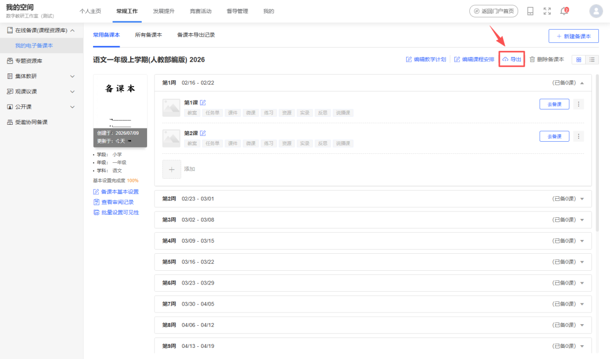
在“备查课本导出记录”中等待导出结果，导出成功将显示“下载”链接。如果备课本的教学设计内容较多，导出过程可能会需要几分钟时间，如果长时间没有出现“下载”链接，请尝试刷新页面。
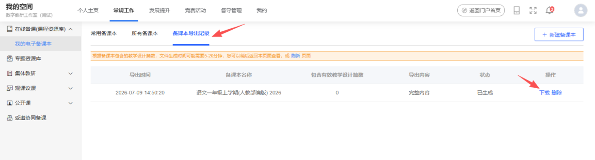
下载的是word 文件，可以用相应的软件继续编辑、打印。
8. 查看备课本审阅记录
管理人员可以抽查教师的备课本，针对备课本的检查可以进行评价，即审阅记录。在备课本中，点击“查看审阅记录”，即可浏览该备课本被审阅的记录与评语。
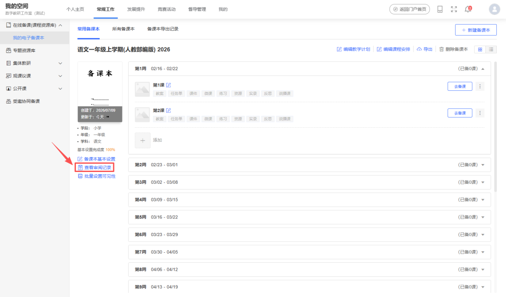